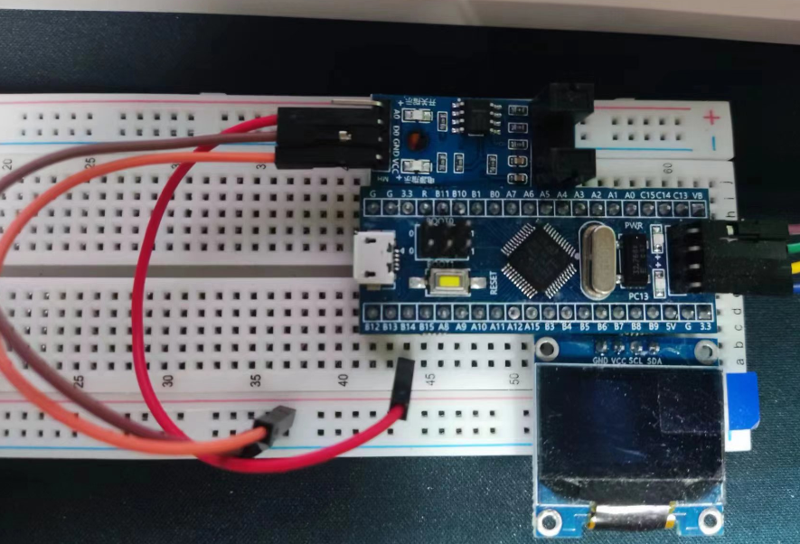
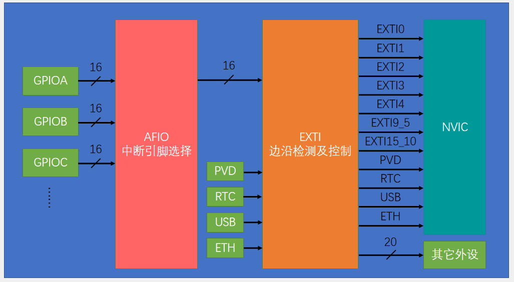
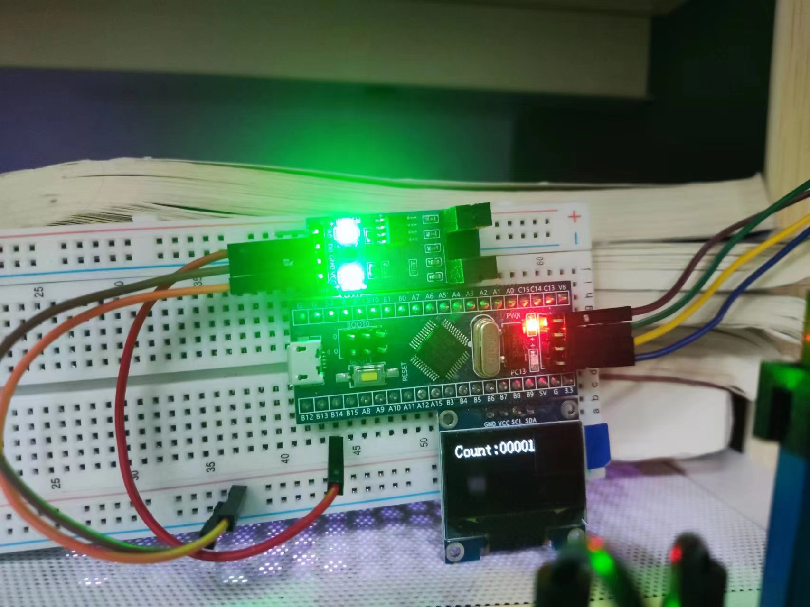

连线图：

DO -> B14
在正确连接通电后，可以看到红外传感器亮起，当挡光片在槽位中时，开关指示灯灭。
代码编写思路分析：
我们先看回 EXTI 基本结构：

我们需要使用到 GPIOB，AFIO，EXTI
在使用之前，我们得先开时钟，其中 EXTI 不需要开启时钟：
RCC_APB2PeriphClockCmd(RCC_APB2Periph_GPIOB,ENABLE); | |
RCC_APB2PeriphClockCmd(RCC_APB2Periph_AFIO,ENABLE); |
这样我们就开启了 GPIOB，AFIO 的时钟了，然后就是引脚的初始化了：
//GPIOB 引脚初始化 | |
GPIO_InitTypeDef GPIO_InitStructure; | |
// 指定 Pin14 为上拉输入模式（内部连接上拉电阻，悬空时默认高电平） | |
GPIO_InitStructure.GPIO_Mode= GPIO_Mode_IPU; | |
GPIO_InitStructure.GPIO_Pin= GPIO_Pin_14; | |
GPIO_InitStructure.GPIO_Speed= GPIO_Speed_50MHz; | |
GPIO_Init(GPIOB,&GPIO_InitStructure); |
接着就是配置 AFIO 外设了，在此之前，先来介绍几个 AFIO 的库函数：
// 复位 AFIO 外设，清除 AFIO 外设配置 | |
void GPIO_AFIODeInit(void); | |
// 锁定 GPIO 配置，参数指定某个引脚，锁定该引脚配置，防止意外更改 | |
void GPIO_PinLockConfig(GPIO_TypeDef* GPIOx, uint16_t GPIO_Pin); | |
// 配置 AFIO 的事件输出功能 | |
void GPIO_EventOutputConfig(uint8_t GPIO_PortSource, uint8_t GPIO_PinSource); | |
void GPIO_EventOutputCmd(FunctionalState NewState); | |
// 用来进行引脚重映射，参数一为重映射方式，参数二为新的状态 | |
void GPIO_PinRemapConfig(uint32_t GPIO_Remap, FunctionalState NewState); | |
// 配置 AFIO 的数据选择器，来选择中断引脚，也是本次所需要用到的函数 | |
void GPIO_EXTILineConfig(uint8_t GPIO_PortSource, uint8_t GPIO_PinSource); | |
// 官方库函数及其解释 | |
/** | |
* @brief Selects the GPIO pin used as EXTI Line. | |
* @param GPIO_PortSource: selects the GPIO port to be used as source for EXTI lines. | |
* This parameter can be GPIO_PortSourceGPIOx where x can be (A..G). | |
* @param GPIO_PinSource: specifies the EXTI line to be configured. | |
* This parameter can be GPIO_PinSourcex where x can be (0..15). | |
* @retval None | |
*/ | |
void GPIO_EXTILineConfig(uint8_t GPIO_PortSource, uint8_t GPIO_PinSource) | |
{ | |
uint32_t tmp = 0x00; | |
/* Check the parameters */ | |
assert_param(IS_GPIO_EXTI_PORT_SOURCE(GPIO_PortSource)); | |
assert_param(IS_GPIO_PIN_SOURCE(GPIO_PinSource)); | |
tmp = ((uint32_t)0x0F) << (0x04 * (GPIO_PinSource & (uint8_t)0x03)); | |
AFIO->EXTICR[GPIO_PinSource >> 0x02] &= ~tmp; | |
AFIO->EXTICR[GPIO_PinSource >> 0x02] |= (((uint32_t)GPIO_PortSource) << (0x04 * (GPIO_PinSource & (uint8_t)0x03))); | |
} |
配置 AFIO 外设
// 选择 GPIOB 作为外部中断源，指定 Pin14 为外部中断线 | |
GPIO_EXTILineConfig(GPIO_PortSourceGPIOB,GPIO_PinSource14); |
配置完 AFIO 后，PB14 引脚的电平信号就可以顺利通过 AFIO，进入到 EXTI 电路了
接下来，就是配置 EXTI 了，老样子，我们先了解一下 EXTI 的库函数
// 清除 EXTI 配置，恢复上电默认状态 | |
void EXTI_DeInit(void); | |
// 调用这个函数，就可以根据结构体参数里的参数配置 EXTI 外设 | |
void EXTI_Init(EXTI_InitTypeDef* EXTI_InitStruct); | |
// 可以把参数传递的结构体变量赋一个默认值 | |
void EXTI_StructInit(EXTI_InitTypeDef* EXTI_InitStruct); | |
// 用于软件触发外部中断的 | |
void EXTI_GenerateSWInterrupt(uint32_t EXTI_Line); | |
// 可以获取指定的标志位是否被置 1 了 | |
FlagStatus EXTI_GetFlagStatus(uint32_t EXTI_Line); | |
// 可以对置 1 的标志位进行清除 | |
void EXTI_ClearFlag(uint32_t EXTI_Line); | |
// 获取中断标志位是否被置 1 了 | |
ITStatus EXTI_GetITStatus(uint32_t EXTI_Line); | |
// 清除中断挂起标志位 | |
void EXTI_ClearITPendingBit(uint32_t EXTI_Line); |
配置 EXTI
EXTI_InitTypeDef EXTI_InitStructure; | |
// 指定配置中断线 | |
EXTI_InitStructure.EXTI_Line = EXTI_Line14; | |
// 开启中断 | |
EXTI_InitStructure.EXTI_LineCmd= ENABLE; | |
// 指定外部中断线模式为中断模式 | |
EXTI_InitStructure.EXTI_Mode= EXTI_Mode_Interrupt; | |
// 选择为下降沿触发 | |
EXTI_InitStructure.EXTI_Trigger= EXTI_Trigger_Falling; | |
EXTI_Init(&EXTI_InitStructure); |
这样 EXTI 就配置完成了，PB14 的电平信号就可以通过 EXTI 通向下一级 NVIC 了，接下来就是配置 NVIC 了
先了解一下库函数；
// 用于指定中断分组 | |
void NVIC_PriorityGroupConfig(uint32_t NVIC_PriorityGroup); | |
// 根据结构体里面的参数初始化 NVIC | |
void NVIC_Init(NVIC_InitTypeDef* NVIC_InitStruct); | |
// 设置中断向量表 | |
void NVIC_SetVectorTable(uint32_t NVIC_VectTab, uint32_t Offset); | |
// 系统低功耗配置 | |
void NVIC_SystemLPConfig(uint8_t LowPowerMode, FunctionalState NewState); | |
// | |
void SysTick_CLKSourceConfig(uint32_t SysTick_CLKSource); |
配置 NVIC
// 选择第二个分组，响应 2，抢占 2 | |
NVIC_PriorityGroupConfig(NVIC_PriorityGroup_2); | |
NVIC_InitTypeDef NVIC_InitStructure; | |
// 选择 EXTI10-15 通道 | |
NVIC_InitStructure.NVIC_IRQChannel= EXTI15_10_IRQn; | |
// 选择使能 | |
NVIC_InitStructure.NVIC_IRQChannelCmd= ENABLE; | |
// 设定抢占优先级 | |
NVIC_InitStructure.NVIC_IRQChannelPreemptionPriority= 1; | |
// 设定响应优先级 | |
NVIC_InitStructure.NVIC_IRQChannelSubPriority= 1; | |
NVIC_Init(&NVIC_InitStructure); |
中断函数的编写
// 中断函数 | |
void EXTI15_10_IRQHandler(void) | |
{ | |
// 判断中断线路 14 标志位是否被置 1 | |
if (EXTI_GetITStatus(EXTI_Line14) == SET) | |
{ | |
CountSensor_Count++; | |
EXTI_ClearITPendingBit(EXTI_Line14); | |
} | |
} |
所有代码展示：
main.c
#include "stm32f10x.h" // Device header | |
#include "OLED.h" | |
#include "CountSensor.h" | |
int main() | |
{ | |
OLED_Init(); | |
CountSensor_Init(); | |
OLED_ShowString(1,1,"Count:"); | |
while(1) | |
{ | |
OLED_ShowNum(1,7,CountSensor_Get(),5); | |
} | |
} |
CountSensor.h
#ifndef __COUNT_SENSOR_H | |
#define __COUNT_SENSOR_H | |
void CountSensor_Init(void); | |
uint16_t CountSensor_Get(void); | |
#endif |
CountSensor.c
#include "stm32f10x.h" // Device header | |
uint16_t CountSensor_Count; | |
void CountSensor_Init(void) | |
{ | |
RCC_APB2PeriphClockCmd(RCC_APB2Periph_GPIOB,ENABLE); | |
RCC_APB2PeriphClockCmd(RCC_APB2Periph_AFIO,ENABLE); | |
GPIO_InitTypeDef GPIO_InitStructure; | |
GPIO_InitStructure.GPIO_Mode= GPIO_Mode_IPU; | |
GPIO_InitStructure.GPIO_Pin= GPIO_Pin_14; | |
GPIO_InitStructure.GPIO_Speed= GPIO_Speed_50MHz; | |
GPIO_Init(GPIOB,&GPIO_InitStructure); | |
GPIO_EXTILineConfig(GPIO_PortSourceGPIOB,GPIO_PinSource14); | |
EXTI_InitTypeDef EXTI_InitStructure; | |
EXTI_InitStructure.EXTI_Line = EXTI_Line14; | |
EXTI_InitStructure.EXTI_LineCmd= ENABLE; | |
EXTI_InitStructure.EXTI_Mode= EXTI_Mode_Interrupt; | |
EXTI_InitStructure.EXTI_Trigger= EXTI_Trigger_Falling; | |
EXTI_Init(&EXTI_InitStructure); | |
NVIC_PriorityGroupConfig(NVIC_PriorityGroup_2); | |
NVIC_InitTypeDef NVIC_InitStructure; | |
NVIC_InitStructure.NVIC_IRQChannel= EXTI15_10_IRQn; | |
NVIC_InitStructure.NVIC_IRQChannelCmd= ENABLE; | |
NVIC_InitStructure.NVIC_IRQChannelPreemptionPriority= 1; | |
NVIC_InitStructure.NVIC_IRQChannelSubPriority= 1; | |
NVIC_Init(&NVIC_InitStructure); | |
} | |
uint16_t CountSensor_Get(void) | |
{ | |
return CountSensor_Count; | |
} | |
void EXTI15_10_IRQHandler(void) | |
{ | |
if (EXTI_GetITStatus(EXTI_Line14) == SET) | |
{ | |
CountSensor_Count++; | |
EXTI_ClearITPendingBit(EXTI_Line14); | |
} | |
} |
效果：
